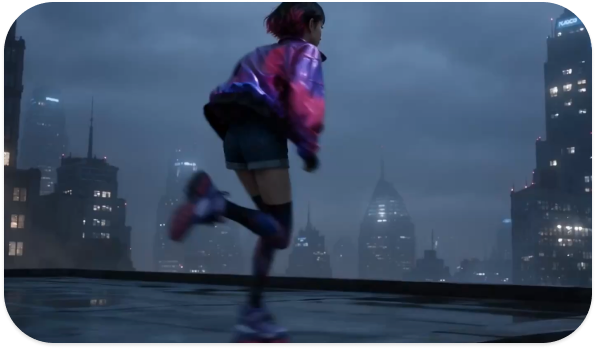
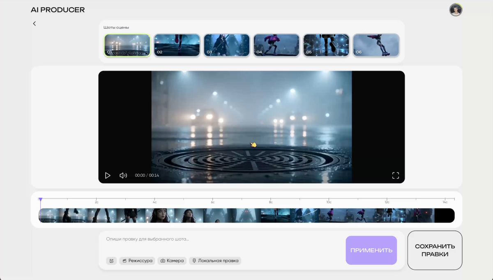

«Сейчас я сначала собираю референсы, потом отдельно объясняю нейросети, что с ними делать»
МЕДИА-ХУДОЖНИКAI PRODUCER
Веб-платформа для создания последовательных
AI-сцен с режиссёрским контролем
ТРАБЛ
AI ГЕНЕРИРУЕТ КАДР —
НО НЕ РЕЖИССИРУЕТ СЦЕНУ

ПРОВЕРКА
ГЛУБИННЫЕ ИНТЕРВЬЮ
7 Респондентов
Медиа-художники
Специалисты из видеопродакшена
ИНСАЙТЫ
«Мне нужно видеть всю сцену целиком, а не просто следующий кадр»
РЕЖИССЁР«Локально поправить один момент сложнее, чем собрать всё заново»
ВИДЕОПРОДАКШЕНПРОБЛЕМА НЕ В ГЕНЕРАЦИИ,
А В УПРАВЛЕНИИ СЦЕНОЙ
РЕШЕНИЕ
РАБОЧЕЕ ПРОСТРАНСТВО ДЛЯ СЦЕНЫ
AI Producer объединяет визуальное направление, сборку шотов и локальные правки в одном управляемом сценарии

ТЕСТИРОВАНИЕ
Проверил, считывается ли сценарий от сборки визуальной концепции до локальной правки и экспорта
65
респондентов в Pathway
3,7
средняя оценка понятности
РАЗВИТИЕ
Снизить порог входа: добавить подсказки, ясные активные состояния и обратную связь между шагами сценария